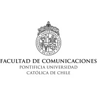

Voy en tercer año de periodismo en la Pontificia Universidad Católica. Hice mi practica interna en la radio UC en 2023, donde fui columnista del programa "Modulo 2" en donde hablaba sobre los estrenos del mundo del cine y las series. También fui reportera durante el trasnoche para la elecciones de la FEUC 2024.
Aparte de estudiar, también he trabajado durante el verano. El año pasado fui promotora de una peluquería en donde tenía que tratar de aumentar la cantidad de clientes entregandoles folletos informativos y hablandoles sobre la peluquería. Además, este año trabajé como promotora del banco BCI en el Mall Paque Arauco.
Instagram de la empresa Artiko la cual soy encargada de manejar las redes sociales.
Soy una persona muy sociable y extrovertida. Me gusta mucho trabajar en equipo y aprender de otras personas. Soy una líder que puede ayuar a destacar a sus compañeros en lo que se destaquen y siempre manteniendo un ambiente de respeto. Soy muy optimista y siempre con ganas de mejorar y aprender.
